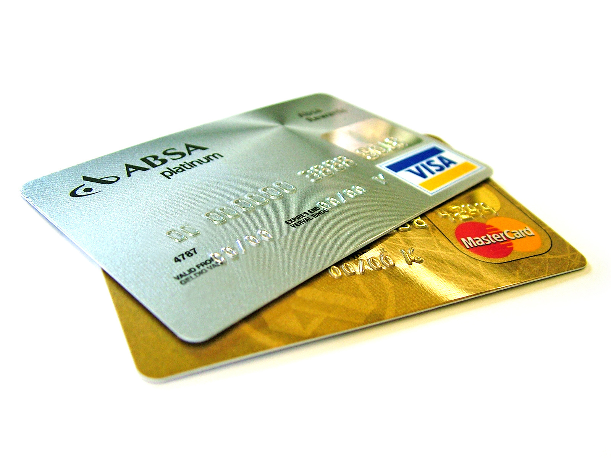

AQSh kredit bali (credit score) qanday hisoblanadi: FICO, VantageScore va uni qanday yaxshilash
AQShda uy ijarasi, avtokredit, ipoteka va hatto ish — hammasi kredit baliga bog'liq. Mana FICO va VantageScore 300–850 bali qanday hisoblanadi, qaysi omillar og'irroq va yangi kelgan muhojir uni qanday nol'dan quradi.

AQShda kredit bali (credit score) — bu insonning qarzni o'z vaqtida qaytarish ehtimolini bildiruvchi uch xonali raqam. Bankdan karta yoki kredit olish, kvartira ijarasi, avtomobil sug'urtasi narxi, mobil operator shartnomasi va ba'zan ish beruvchining qarori ham shu balga bog'liq bo'lishi mumkin. Eng keng tarqalgan ikki model — FICO Score va VantageScore — har ikkalasi ham 300 dan 850 gacha oraliqda ishlaydi; raqam qancha yuqori bo'lsa, qarz berish shunchalik kam xavf hisoblanadi (Manba: Experian; Britannica — FICO vs VantageScore).
FICO bali: besh omil va ularning og'irligi
FICO bali besh toifadan iborat bo'lib, ularning og'irligi quyidagicha: to'lov tarixi (payment history) — 35%, ya'ni hisoblarni o'z vaqtida to'laganmisiz; qarz miqdori va foydalanish darajasi (amounts owed / utilization) — 30%, ya'ni limitingizning qanchasini ishlatyapsiz; kredit tarixi uzunligi (length of credit history) — 15%; yangi kreditlar (new credit) — 10%; kredit turlari aralashmasi (credit mix) — 10%. Eng og'ir omil — to'lov tarixi, shuning uchun hatto bitta kechiktirilgan to'lov ham balga sezilarli ta'sir qiladi (Manba: Experian; NerdWallet).
FICO va VantageScore farqi
Ikkala model ham 300–850 oralig'ida bo'lsa-da, og'irliklari biroz farq qiladi. VantageScore 4.0'da to'lov tarixi yanada og'irroq — taxminan 41% baholanadi (FICO'da 35%). Shuningdek, VantageScore 4.0'da yaqinda olingan kreditlar va so'rovlar (recent credit) omilining ta'siri oshgan. Natijada bir odamning FICO va VantageScore bali bir-biridan bir necha ball farq qilishi mumkin — bu normal holat, chunki kreditorlar turli modellardan foydalanadi (Manba: Self — VantageScore vs FICO; Chase; Britannica).

Ball darajalari nimani anglatadi
FICO bali odatda quyidagi darajalarga bo'linadi: 300–579 — past (poor); 580–669 — o'rtacha (fair); 670–739 — yaxshi (good); 740–799 — juda yaxshi (very good); 800–850 — a'lo (exceptional). 670 dan yuqori ball ko'pchilik kreditorlar uchun “maqbul” hisoblanadi; 740 dan yuqori ball esa odatda eng past foiz stavkalari va eng yaxshi shartlarni ochib beradi. Past ball kreditdan butunlay mahrum qilmaydi, lekin foiz va depozitni qimmatlashtiradi (Manba: Experian).
Kredit hisoboti va uchta byuro
Ball o'z-o'zidan paydo bo'lmaydi — u kredit hisoboti (credit report) asosida hisoblanadi. AQShda uchta yirik kredit byurosi mavjud: Equifax, Experian va TransUnion. Ular sizning kartalaringiz, kreditlaringiz va to'lovlaringiz tarixini yig'adi. Qonunga ko'ra, har bir byurodan yiliga kamida bir marta hisobotni BEPUL olish mumkin — yagona rasmiy manba AnnualCreditReport.com hisoblanadi. Hisobotdagi xatolarni (masalan, begona qarz) topib, byuroga e'tiroz bildirib tuzattirish balni ko'tarishi mumkin (Manba: AnnualCreditReport.com; Experian).
Yangi kelganlar uchun: nol'dan kredit qurish
AQShga yangi kelgan ko'p odamning hech qanday kredit tarixi bo'lmaydi — buni “credit invisible” (kredit tizimida ko'rinmas) deyishadi, va u ball yo'qligini anglatadi. Tarixni qurishning amaliy yo'llari: ta'minlangan karta (secured credit card — o'zingiz depozit qo'yasiz, u limitga aylanadi); ishonchli qarindosh yoki do'stning kartasida “ruxsat etilgan foydalanuvchi” (authorized user) bo'lish; credit-builder qarzlari; hamda ijara va kommunal to'lovlarni kredit hisobotiga qo'shadigan xizmatlardan foydalanish (Manba: Experian; NerdWallet).
Balni yaxshilashning asosiy qoidalari
Ballni mustahkamlashning isbotlangan usullari: barcha hisoblarni har doim o'z vaqtida to'lash (to'lov tarixi eng og'ir omil); kredit limitingizning 30% dan kamini ishlatish (utilization ni past tutish); eski kartalarni yopmaslik (tarix uzunligi muhim); qisqa vaqt ichida ko'p yangi karta/kredit so'ramaslik (har bir “hard inquiry” balni biroz tushiradi); va kredit hisobotini muntazam tekshirib borish. Kredit bali tez emas, lekin izchil, oylar davomidagi to'g'ri xatti-harakat bilan o'sadi (Manba: Experian; NerdWallet).